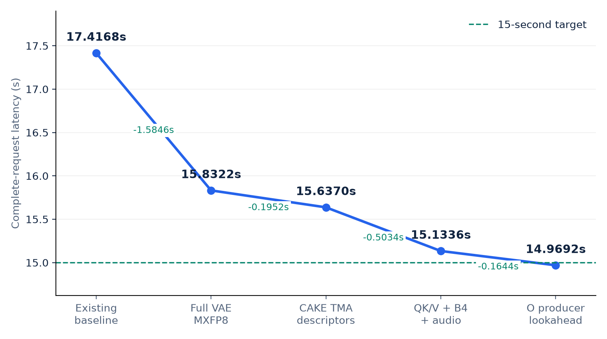
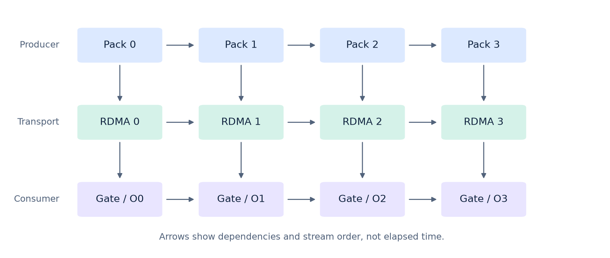
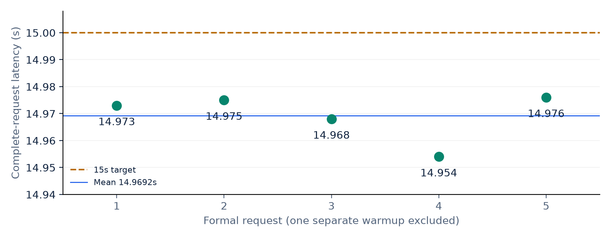

From 653.838 seconds to a full-VAE sub-15s profile
After rolling back the old lossy branch, the restored BF16 VSA baseline was 27.4937s. Profiling-driven scheduling changes and newly qualified precision choices lead to a selected 14.9692s complete-request mean.
Download revised PDF · 24 pages中文累计优化表Data and evidence
Adopted cumulative path
Each arrow retains its own measured control. Only adopted additions saving more than 0.100s are listed as gain rows. New precision baselines are labeled separately; cross-cohort differences are not invented single-factor gains.
| Adopted change | Numerical scope | E2E / s | Saved / s |
|---|---|---|---|
| Restored BF16 VSA baseline Four-step FastH3 + VSA; BF16 linears and wire; full H3 VAE; existing exact engineering retained. | Baseline | 27.4937 | — |
| Sage/CAKE attention Sage/CAKE with ragged-tail correction | Approximate | 27.4937 → 25.7063 | 1.7873 |
| QK/V + four-chunk O Q/K preparation during V exchange; O return/projection pipeline | Byte-exact | 25.7613 → 25.1353 | 0.6260 |
| Gate projection overlap Original BF16 gate GEMM on the side stream during Q/K exchange | Byte-exact | 25.1177 → 24.3403 | 0.7773 |
| Views + Q + coarse/fine Remove layout copies; earlier Q preparation; parallel coarse/fine | Byte-exact | 24.3647 → 24.0117 | 0.3530 |
| QKV projection split First complete QK + V split A/B; later scheduling refinements inherited | Byte-exact | 24.0268 → 23.6654 | 0.3614 |
| Paired VAE windows Balance spatial tiles across ranks and overlap assembly | Byte-exact | 23.6536 → 22.6670 | 0.9866 |
| Exact VAE B2 batching Batch paired tiles; preserve sensitive to_out at B1 | Byte-exact | 22.6670 → 22.3662 | 0.3008 |
| Fixed allocator segments expandable_segments:False | Byte-exact | 22.5924 → 21.7712 | 0.8212 |
| New DiT MXFP8 baseline No matched BF16 control in this cohort; do not assign the entire cross-cohort difference to quantization. | Approximate / new baseline | 17.9240 | — |
| RDMA across requests Retain registered communication resources | Byte-exact | 17.9214 → 17.5780 | 0.3434 |
| SwiGLU / FC2 quantization Fuse the activation producer while retaining reference rounding | Byte-exact | 17.5780 → 17.4478 | 0.1302 |
| Existing later baseline Inherited qualified configuration; no separate sub-100ms gain row. | Baseline | 17.4168 | — |
| Online MXFP8 full VAE Quantize the full H3 decoder online | Approximate | 17.4168 → 15.8322 | 1.5846 |
| CAKE TMA descriptors Descriptor-by-value adaptation on the existing CAKE path | Byte-exact | 15.8322 → 15.6370 | 0.1952 |
| MXFP8 scheduling bundle MXFP8 QK/V split + VAE B4 + audio/video decode overlap | Byte-exact | 15.6370 → 15.1336 | 0.5034 |
| O producer lookahead Prequeue four O packs with per-chunk readiness events | Byte-exact | 15.1336 → 14.9692 | 0.1644 |
The initial QKV split result is one comparison, not the sum of its later scheduling variants. The early 24.0117s endpoint was not reproduced unchanged in every subsequent same-feature cohort. Small inherited changes are part of the existing baseline and are not advertised as new gains.
The final cumulative descent

{kind=link}
{kind=link}
What the profiles changed
Q/K preparation now overlaps V communication. The original BF16 VSA gate projection runs during Q/K exchange. Splitting the QKV producer adds a separate V-compute overlap window. Four-chunk O return/projection and the later O-pack lookahead remove serial waits while retaining ready events and buffer lifetimes.

Dependency diagram, not a measured timeline. Remaining communication and projection tails are not claimed to be fully hidden.
Quality evidence
Full-VAE MXFP8 versus the preceding full-VAE reference: SSIM 0.978920, PSNR 43.041443 dB across all 362 decoded frames, including codec effects; audio PCM identical. Subsequent scheduling changes preserve the six matching-reference MP4s byte for byte.
One formal-seed video supplies these quality metrics. Six byte gates mean one warmup and five formal requests, not six independent prompts. FastH3, VSA, Sage/CAKE and MXFP8 are approximate; engineering byte identity does not make the entire path equivalent to original dense BF16.
Final measurement

8× SM120; DiT TP1/Ulysses8/Ring1; full VAE parallel8. Four ConnectX-8 groups / eight active 400Gb/s mlx5 devices. 362 frames at 24 fps, effective 1280×704, H.264 and stereo 32kHz AAC. Client POST to complete MP4 saved; load, warmup and post-run validation excluded. The 30.8ms mean margin is specific to this workload and node.
Evidence and original edition
Historical evidence snapshots · Current source hashes and request data · Checksums · Original 71-page PDF (superseded historical archive)
The revised PDF retains 12 original technical pages for the still-adopted foundations. It replaces the original PDF at the same download path. No GPU experiments were run for this documentation revision.